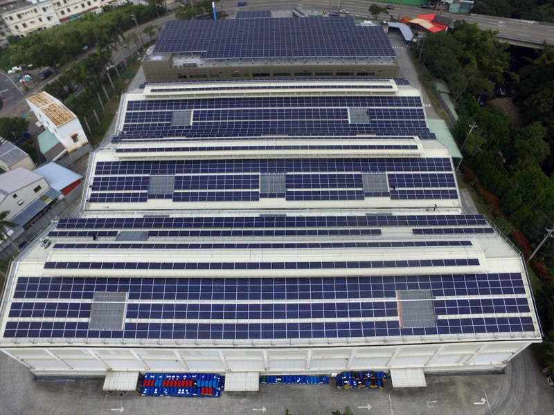

文: 石鈞太/國家再生能源憑證中心
RE100是由作為氣候組織(The Climate Group)與碳揭露計畫(Carbon Disclosure Project, CDP)所主導的全球再生能源倡議，加入企業必須公開承諾在2020至2050年間達成100%使用綠電的時程，並逐年提出規劃，近年越來越多的企業附和RE100的倡議，承諾陸續達到100%使用綠電，台灣迄今也有5家企業加入RE100。
正崴集團早在13年前便超前部署，投身綠色能源產業，「森威能源」及「富崴電力」作為集團的綠色事業群代表，從太陽光電起家、跨足風力發電，甚至投資水力電廠，而今年5月國內首批綠電轉供交易，參與業者達13家，估算年交易量高達1.1億度綠電以上(憑證約11萬張)，也是富威電力作為再生能源售電業的成果，正崴集團因此每月可獲得20張以上T-REC再生能源憑證，且未來仍在持續擴展中。
森崴能源太陽能板鳥瞰圖
全球環保意識抬頭，消費者對於所購買與使用的產品，都有更高的標準與期待: 希望製造商都能有意識到在產品的生產過程中，減少對環境的損害與地球資源的浪費。因此，具備ESG環境、社會、公司治理意識的品牌價值大幅提升，越來越多消費性品牌企業，透過使用綠電這樣的「綠色行動」，建立公司良好形象，強化消費者的產品購買意願與品牌認同感。一方面使環境得以永續發展、另一方面樹立良好企業形象，以今年成為台灣第五家加入RE100企業的台積電為例，是全球首家簽下RE100倡議的半導體業者，承諾在2050年達到100%使用再生能源，讓全球看見台灣產業近年在環境永續上投注的努力與決心，也反映台灣近年積極打造綠色供應鏈的初步成效。同時呼應正崴集團中的森崴能源胡惠森總經理所說的，「大型的國際企業對下游廠商的要求，只會越來越嚴格，要超前部署，才能接軌國際」，本著企業社會責任和環境永續目標，正崴集團也將致力朝向100%使用綠電的目標邁進。
胡惠森總經理也提醒，如果未來全球一線大廠都要求下游代工廠商一定比例使用綠電，台灣作為全球供應鏈中的主要出口國，勢必得清楚自己的定位和消費性品牌客戶的需求，利用T-REC可協助企業將「環境效益」具體化，提早採取動作、接軌世界、進而維持企業在國際供應鏈的地位。